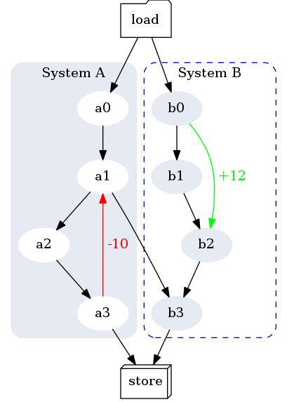

From this post, I read the following command line to call pandoc with the GraphViz filter:
pandoc README.md -s --smart --mathjax \
--css nrstyle.css \
--highlight-style pygments \
--columns=200 \
--filter graphviz.py \
-o README.htmlwhere the filter graphviz.py comes from here and the nrstyle.css file comes from here. Indeed, you can use whatever CSS file you like or don’t use any.
The above command requires pandoc. The pandoc filter graphviz.py requires GraphViz and some Python packages. Dockerfile lists all these dependencies. So you can install them by building a Docker image:
docker build -t pandoc .Then run a container that executes this image:
docker run --rm -it -v $PWD:/work -w /work pandoc bashIn the container, let us type the above long command, which converts this README.md file into REAME.html. Please be aware that the following code
digraph G {
bgcolor="#ffffff00"
subgraph cluster_0 {
style="filled, rounded";
color="#E6EAF2"
node [style=filled,color=white];
a0 -> a1 -> a2 -> a3;
a3 -> a1 [label = " -10" color=red fontcolor=red];
label = "System A";
}
subgraph cluster_1 {
node [style=filled color="#E6EAF2"];
b0 -> b1 -> b2 -> b3;
b0 -> b2 [label = " +12" color=green fontcolor=green];
label = "System B";
style="dashed, rounded"
color=blue
}
start -> a0;
start -> b0;
a1 -> b3;
a3 -> end;
b3 -> end;
start [label="load" shape=folder];
end [label="store" shape=box3d];
}shows as the following figure in the HTML file.

Also, pandoc, no need for any filter, is able to handle math and table. For example, the following table
| Label | Description |
| :----------: | :-----------------------------------------------------------------: |
| `meanflx` | $${\langle F\rangle=\frac{1}{N_f}\sum_i F_i}$$ |
| `wmeanflx` | $${\langle F\rangle_w=\frac{F_i w_i}{\sum_i w_i}}$$ |
| `rmsflx` | $${\sqrt{\langle F^2\rangle_w} = \sqrt{\frac{F_i^2 w_i}{\sum_i}}}$$ |shows as the follows in the HTML file:
| Label | Description |
|---|---|
meanflx |
\[{\langle F\rangle=\frac{1}{N_f}\sum_i F_i}\] |
wmeanflx |
\[{\langle F\rangle_w=\frac{F_i w_i}{\sum_i w_i}}\] |
rmsflx |
\[{\sqrt{\langle F^2\rangle_w} = \sqrt{\frac{F_i^2 w_i}{\sum_i}}}\] |